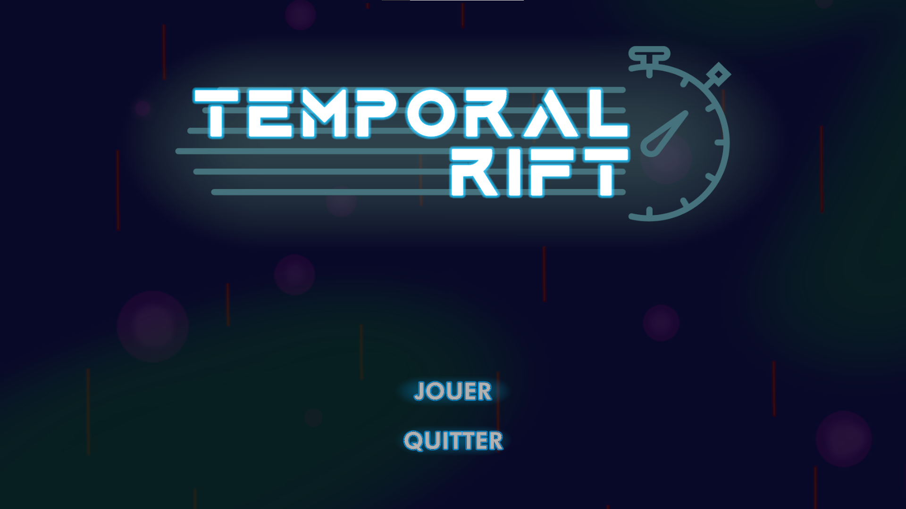

Temporal Rift
January 2023
About this project
From 23 to 25 January 2023, I participated in the 7th edition of the Code Game Jam. It is a video game creation event, by team, on a given theme. This year, the theme was "masters of time".
I teamed up with 5 classmates to design this game during this 30 hours adventure. We chose to make a bullet-dodging game with an ability to stop time. You can find and play the game on Mikachue's itch.io page. My work on this was mostly about drawing, game design, with a bit of coding. Overall, our game was quite well received, as it received the second prize out of 36 teams.
What I learned from it
This project was mostly about time and skill management. We needed to be quick and assign the tasks to make the best use out of each member. I mainly learned about gamedesign, including what to do to give the player the best experience possible, without frustrating them nor making the game too easy. I also re-discovered Unity and editing softwares, to make the games assets and mechanics.
Skills put to use
- Unity
- C#
- Game design